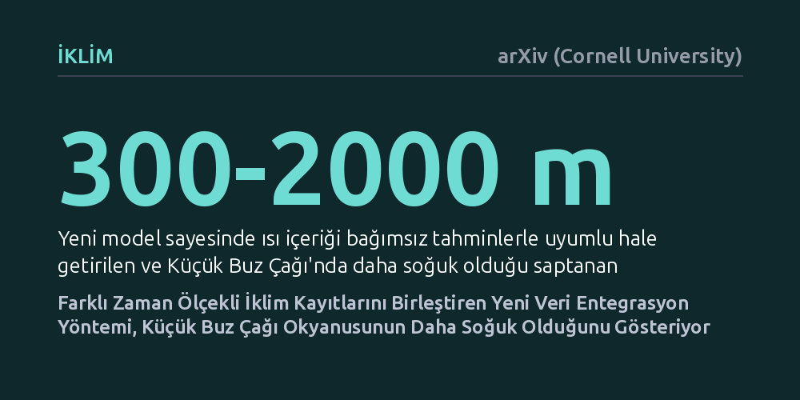

IKLIM · arXiv (Cornell University) · 2026-09-12
Araştırmacılar, farklı zaman ölçeklerindeki geçmiş iklim kayıtlarını fiziksel modellerle tutarlı biçimde birleştiren dört boyutlu varyasyonel bir veri asimilasyon yöntemi geliştirdi. Bu yeni yaklaşım, önceki iklim canlandırmalarından daha yüksek doğruluk sağlarken Küçük Buz Çağı okyanuslarının sanılandan daha soğuk olduğunu ortaya koydu.
Geçmişin dağınık ve uyumsuz iklim kayıtlarını tek bir matematiksel çerçevede birleştirebilmek, gezegenimizin iklim hafızasını ve günümüzdeki küresel ısınma eğilimlerini çok daha net anlamamızı sağlar.

İklim krizinin boyutlarını kavramak ve gelecekteki sıcaklık artışlarını doğru öngörebilmek için yerkürenin geçmişte doğal etkenlere nasıl tepki verdiğini bilmek zorundayız. Ancak termometrelerle yapılan güvenilir aletli ölçümler yalnızca son yüz elli yılı kapsıyor. Bu tarihten öncesine ulaşmak için ağaç halkaları, buzul karotları, göl çökelleri ve yer altı kayaç sıcaklıkları gibi doğal iklim arşivlerine başvuruyoruz.
Fakat bu doğal kayıtların dili ve hafızası birbirinden çok farklıdır. Kimi veriler tek bir mevsimdeki ya da yıldaki hava olaylarını yüksek hassasiyetle yansıtırken, yer altı sıcaklıkları gibi jeotermal kayıtlar yüzlerce yıla yayılan ısınma ve soğumaların yavaş bir ortalamasını tutar. Şimdiye kadar uygulanan modelleme yaklaşımları, farklı zaman ölçeklerine ve belirsizlik paylarına sahip bu uyumsuz verileri tek bir matematiksel çatı altında çelişki yaratmadan birleştirmekte zorlanıyordu.
Araştırma ekibi bu yöntemsel engeli aşmak için meteorolojide hava tahmin modellerini iyileştirmekte kullanılan gelişmiş bir yaklaşıma başvurdu: Dört boyutlu varyasyonel veri asimilasyonu (4D-Var). Geliştirilen "LMR4D-Var" isimli modelleme altyapısı, farklı kaynaklardan gelen iklim göstergelerini anlık eşdeğerlermiş gibi basitleştirmek yerine, her birinin kendine özgü zaman aralığını ve fiziksel belleğini doğrudan hesaba katıyor.
Bu sistemik yaklaşımda modelin kendi iç hataları, fiziksel gözlemlerin belirsizlikleri ve simülasyonun başlangıç koşulları eşzamanlı olarak dengeleniyor. PAGES2k veri tabanındaki yıllık çözünürlüklü kayıtlar, Temp12k arşivindeki bin yıllık eğilimler ve derin sondaj kuyularından toplanan sıcaklık eğrileri, fizik temelli iklim simülasyonlarıyla tutarlı bir bütün haline getiriliyor.
Geliştirilen yöntemin doğruluğu aletli ölçüm dönemi verileriyle sınandığında, LMR4D-Var'ın geçmiş iklim canlandırmaları arasında bugüne kadarki en yüksek modelleme başarısına ulaştığı görüldü. Model, analiz sürecine kasıtlı olarak katılmayan bağımsız yıllık veriler karşısında da yüksek tutarlılığını korumayı sürdürdü.
Çalışmanın en somut fiziksel bulgusu ise okyanusların derinliklerinde kendini gösterdi. Sondaj kuyusu verilerinin asimilasyona dahil edilmesi, 300 ila 2000 metre derinlikteki okyanus ısı içeriğini bağımsız jeofizik tahminlerle çok daha uyumlu bir çizgiye getirdi. Bu modelleme, yaklaşık 14. yüzyıldan 19. yüzyıla kadar devam eden Küçük Buz Çağı süresince okyanusların daha önce tahmin edilenden belirgin şekilde daha soğuk olduğunu ortaya çıkardı.
Okyanuslar, gezegenimizin iklim dengesinde devasa bir ısı deposu işlevi görür. Geçmişteki soğuma evrelerinde okyanusların ne kadar ısı kaybettiğini veya depoladığını netleştirmek, günümüzde insan kaynaklı küresel ısınmanın ne kadarının derin sulara hapsolduğunu daha kesin hesaplamamıza olanak tanır.
Araştırmacılar, bu modelleme çerçevesinin sadece son bin yılla sınırlı kalmayacağını, geliştirilecek uygun matematiksel öykünücüler sayesinde son 12.000 yılı kapsayan Holosen dönemine ve hatta çok daha eski jeolojik zamanlara da başarıyla uygulanabileceğini ifade ediyor.